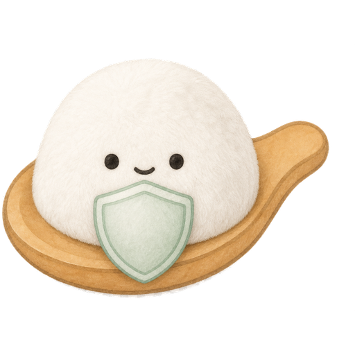

整理历史
从 Cursor、Claude、Codex 等本机记录中，找到项目背景、反复出现的偏好和关键决策。
 Memmy
下载
Memmy
下载
Memmy 读取你授权的本机 AI 协作历史，把零散对话提炼成结构化记忆，再按当前任务把合适的上下文递给新的 AI 对话。
从 Cursor、Claude、Codex 等本机记录中，找到项目背景、反复出现的偏好和关键决策。
把散乱聊天提炼成可搜索、可编辑、可删除的记忆条目，而不是保存一堆原始噪音。
新对话开始时，只注入当前任务相关的上下文，让 AI 更快进入状态，也更少暴露无关信息。
Memmy 把项目约束、技术选择和下一步任务带过去。
长期偏好会被归档，临时任务上下文会按项目区分。
适合复盘方案、整理周报、给团队留下上下文。
Memmy 默认本地优先。哪些来源能被读取、哪些记忆能被使用、什么时候删除，都由你决定。
